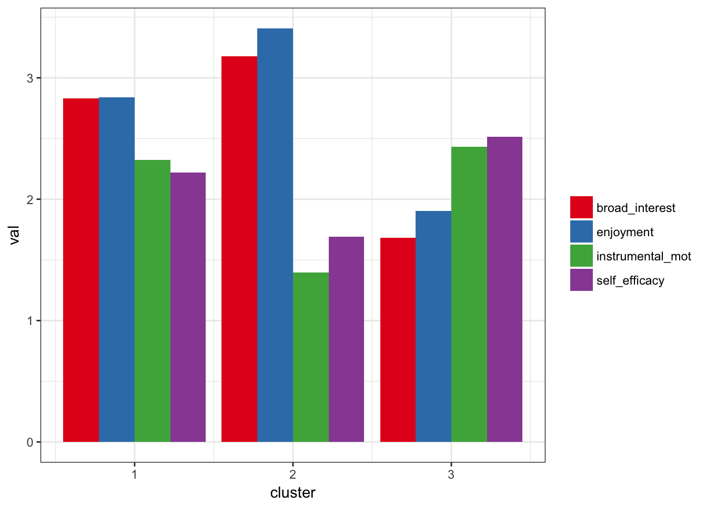

In this example using the built-in to prcr dataset pisaUSA15. Specifically, we use composite variables for broad interest, enjoyment, instrumental motivation, and self-efficacy. More information on these and other items can be found at this link.
## Loading prcrlibrary(prcr)df <- pisaUSA15
m3 <- create_profiles_cluster(df, broad_interest, enjoyment, instrumental_mot, self_efficacy, n_profiles = 3)## Prepared data: Removed 354 incomplete cases## Hierarchical clustering carried out on: 5358 cases## K-means algorithm converged: 5 iterations## Clustered data: Using a 3 cluster solution## Calculated statistics: R-squared = 0.424plot_profiles(m3, to_center = TRUE)## Warning: attributes are not identical across measure variables;
## they will be dropped
Other functions include those for carrying out comparing r-squared values and perfomring cross-validation. These are documented in the CRAN release and their versions in the in-development version will be documented prior to the CRAN release.